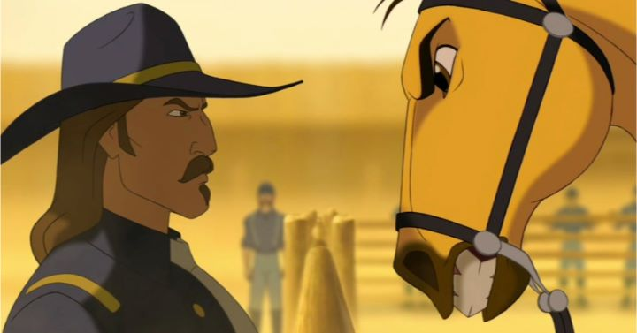

"Spirit - Stallion of the Cimarron" was the third theatrical 2D animated feature out of four that Dreamworks Animation produced in the early 2000's, and the first to get a Bluray release in the USA after many years of waiting. It's a good choice: aside from perhaps "The Prince of Egypt," it's easily the best film of them. I still remember seeing the teaser trailer as a kid, the majesty of a bald eagle flying through the grand canyon, and a wild mustang running through the untamed American plain. This movie is special.It's a bold and usual film, entirely told from the point of view of that golden mustang, named "Spirit," from young colt to adult. Set in the early days of America's development, Spirit's family is captured by human cowboys with the intention to break them in for use in the army, for work or as transportation. Almost akin to slavery, Spirit's efforts to save his herd lead him to be captured too, but his rebellious spirit (and cocky attitude) makes him difficult to tame. As the story progresses, Spirit escapes with the help of a Lakota man named Little Creek and his beautiful horse (named "Rain"). Through them, he learns that not all humans are bad, and ultimately he is able to return safely to the wild with his herd.I suppose the story could be seen as "safe" today, but in animation, it was revolutionary commentary at the time about the good and bad of America's settling. Also, Matt Damon's narration as Spirit's internal voice was largely unnecessary and distracting, even if it occasionally offered decent insight. The movie, like "The Prince of Egypt" and "The Roat to El Dorado" before it, a musical, with fun country-inspired songs about the West and rebellion. I understand that certain viewers will roll their eyes at all of this. If you aren't yet discouraged, "Spirit" will leave you impressed.The respect given to the production is a big reason to it's success. This isn't the first time Dreamworks attempted to use 3D animation to speed up parts of the process, and like those, it isn't always successful: on Bluray, I noticed for the first time that background humans tend to be awkwardly animated 3D models. On the other hand, the iconic eagle that flies throughout the story is also 3D... I think. It's animated with such attention to detail that it blends seamlessly with Spirit and other 2D characters, proof that the studio CAN put it's 3D skills to great use. The horses themselves, of course, are animated with detail and realism, aside from the occasional smirk and human-like eyes in their faces to express human emotion. Majestic is the best way to describe it all. The human acting, in the rare cases where it's present, is toned down comapred to the eccentic performances from Dreamworks' other movies, and therefore is rather good, if slightly dull. The horses themselves provide the most acting, able to express fear, happiness and distrust with their movements, eyes or sounds. It's a great example of how animated animals can be used as main characters. Notably, the Bluray transfer wasn't significant an upgrade compared to what "The Prince of Egypt" and "The Road to El Dorado" would eventually receive (I used the Bluray/DVD combo pack from 2014).  A solid story, premise, and a proper level of respect opposed to Dreamworks' lighthearted comedy makes "Spirit - Stallion of the Cimarron" the best of their animated films, in my personal opinion. Somehow, I always felt as a kid that I'd be singled out for claiming it to be a favorite movie; too romantic perhaps to be cool or interesting to kids. But some children still like the majesty of ponies, and this would be an instant favorite to that type of audience. Even if you don't like horses, this movie might change your mind.
- "Ani" More reviews can be found at : https://2danicritic.github.io/ Previous review: review_Spice_and_Wolf Next review: review_Spirited_Away